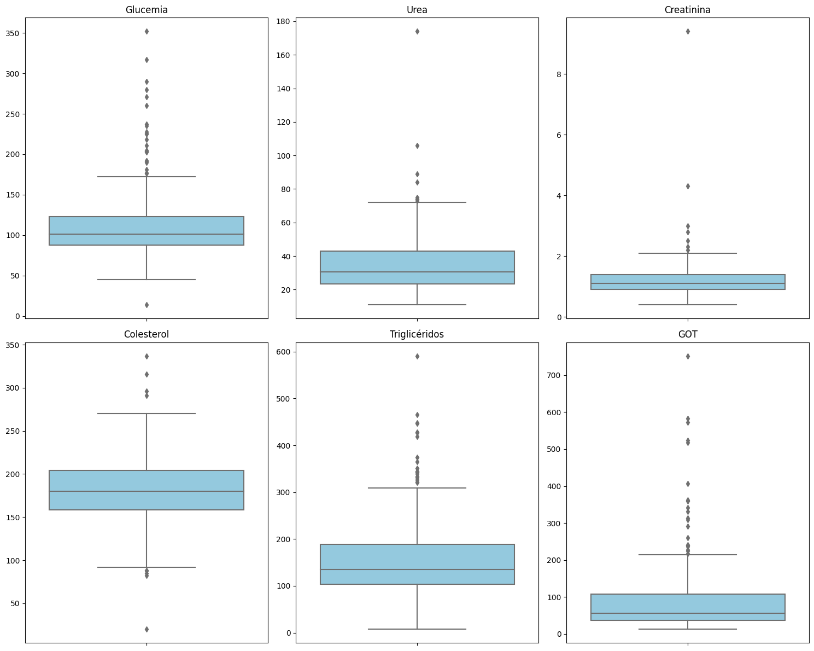
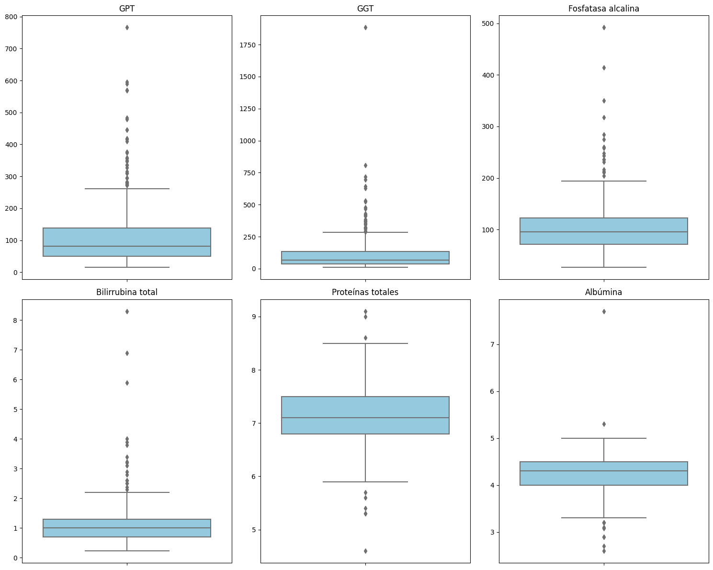
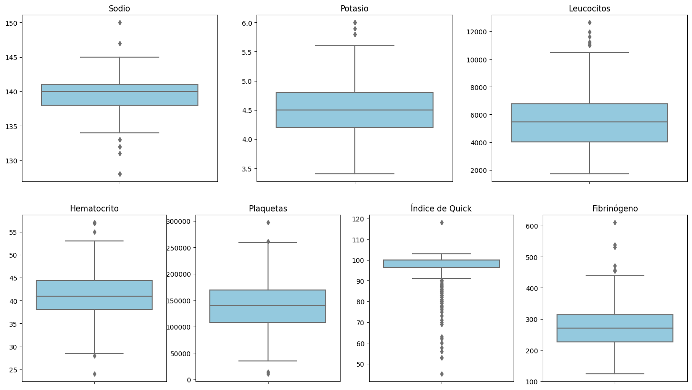
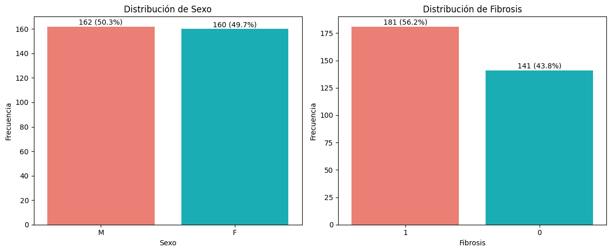
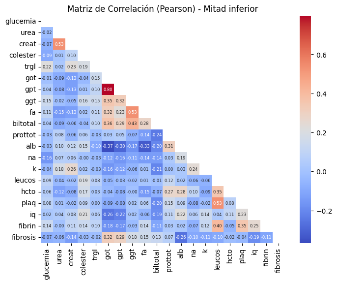

Análisis exploratorio de los datos#
import pandas as pd
import numpy as np
import matplotlib.pyplot as plt
import seaborn as sns
# Carga los datos
df = pd.read_csv('C:/Users/luis_/Desktop\MaestriaEstadisticaAplicada/_11DataViz/Trabajo Fibrosis/fibrosis.csv')
df.head()
| glucemia | urea | creat | colester | trgl | got | gpt | ggt | fa | biltotal | ... | alb | na | k | leucos | hcto | plaq | iq | fibrin | fibrosis | sexo | |
|---|---|---|---|---|---|---|---|---|---|---|---|---|---|---|---|---|---|---|---|---|---|
| 0 | 158 | 26 | 1.6 | 182 | 218.0 | 83 | 174 | 52 | 35 | 1.7 | ... | 4.7 | 143 | 4.7 | 4730 | 48.0 | 88000 | 100.0 | 245 | 0 | 1 |
| 1 | 112 | 31 | 1.5 | 20 | 343.0 | 20 | 36 | 42 | 49 | 1.1 | ... | 4.0 | 143 | 5.0 | 5380 | 46.0 | 147000 | 100.0 | 244 | 0 | 1 |
| 2 | 79 | 28 | 1.5 | 188 | 251.0 | 115 | 90 | 133 | 122 | 1.2 | ... | 4.9 | 141 | 4.7 | 3600 | 47.0 | 99000 | 100.0 | 205 | 0 | 1 |
| 3 | 103 | 31 | 1.3 | 170 | 265.0 | 88 | 185 | 108 | 91 | 1.1 | ... | 5.3 | 137 | 3.9 | 4460 | 49.0 | 104000 | 100.0 | 220 | 0 | 1 |
| 4 | 126 | 26 | 1.3 | 190 | 272.0 | 67 | 185 | 96 | 114 | 0.8 | ... | 4.8 | 141 | 4.4 | 4550 | 46.0 | 73000 | 100.0 | 190 | 0 | 1 |
5 rows × 21 columns
# Estructura de los datos
df.info()
<class 'pandas.core.frame.DataFrame'>
RangeIndex: 322 entries, 0 to 321
Data columns (total 21 columns):
# Column Non-Null Count Dtype
--- ------ -------------- -----
0 glucemia 322 non-null int64
1 urea 322 non-null int64
2 creat 322 non-null float64
3 colester 322 non-null int64
4 trgl 322 non-null float64
5 got 322 non-null int64
6 gpt 322 non-null int64
7 ggt 322 non-null int64
8 fa 322 non-null int64
9 biltotal 322 non-null float64
10 prottot 322 non-null float64
11 alb 322 non-null float64
12 na 322 non-null int64
13 k 322 non-null float64
14 leucos 322 non-null int64
15 hcto 322 non-null float64
16 plaq 322 non-null int64
17 iq 322 non-null float64
18 fibrin 322 non-null int64
19 fibrosis 322 non-null int64
20 sexo 322 non-null int64
dtypes: float64(8), int64(13)
memory usage: 53.0 KB
# Transformar los datos
df['fibrosis'] = df['fibrosis'].map({0: 0, 1: 1, 2: 1, 3:1})
df['sexo'] = df['sexo'].map({1: 'M', 2: 'F'}).astype("category")
df.head()
| glucemia | urea | creat | colester | trgl | got | gpt | ggt | fa | biltotal | ... | alb | na | k | leucos | hcto | plaq | iq | fibrin | fibrosis | sexo | |
|---|---|---|---|---|---|---|---|---|---|---|---|---|---|---|---|---|---|---|---|---|---|
| 0 | 158 | 26 | 1.6 | 182 | 218.0 | 83 | 174 | 52 | 35 | 1.7 | ... | 4.7 | 143 | 4.7 | 4730 | 48.0 | 88000 | 100.0 | 245 | 0 | M |
| 1 | 112 | 31 | 1.5 | 20 | 343.0 | 20 | 36 | 42 | 49 | 1.1 | ... | 4.0 | 143 | 5.0 | 5380 | 46.0 | 147000 | 100.0 | 244 | 0 | M |
| 2 | 79 | 28 | 1.5 | 188 | 251.0 | 115 | 90 | 133 | 122 | 1.2 | ... | 4.9 | 141 | 4.7 | 3600 | 47.0 | 99000 | 100.0 | 205 | 0 | M |
| 3 | 103 | 31 | 1.3 | 170 | 265.0 | 88 | 185 | 108 | 91 | 1.1 | ... | 5.3 | 137 | 3.9 | 4460 | 49.0 | 104000 | 100.0 | 220 | 0 | M |
| 4 | 126 | 26 | 1.3 | 190 | 272.0 | 67 | 185 | 96 | 114 | 0.8 | ... | 4.8 | 141 | 4.4 | 4550 | 46.0 | 73000 | 100.0 | 190 | 0 | M |
5 rows × 21 columns
Descripción de las variables#
En la siguiente tabla se puede ver una descripción de las variables utilizadas en este proyecto. Estas variables corresponden a variables clínicas cuya obtención es rutinaria o poco invasiva, solo necesitando extracción de sangre, las cuales podrían ser útiles a la hora de determinar la presencia o ausencia de fibrosis hepática.
Tabla: Descripción de las variables del estudio
Variable |
Descripción |
Tipo de variable |
|---|---|---|
Glucemia |
Nivel de glucosa en sangre |
Numérica |
Urea |
Producto de desecho renal |
Numérica |
Creatinina |
Indicador de función renal |
Numérica |
Colesterol |
Lípido total en sangre |
Numérica |
Triglicéridos |
Tipo de grasa en sangre |
Numérica |
GOT |
Enzima hepática |
Numérica |
GPT |
Enzima hepática |
Numérica |
GGT |
Enzima hepática |
Numérica |
Fosfatasa alcalina |
Enzima hepática y ósea |
Numérica |
Bilirrubina total |
Producto de desecho del hígado |
Numérica |
Proteínas totales |
Suma de proteínas plasmáticas |
Numérica |
Albúmina |
Principal proteína plasmática |
Numérica |
Sodio |
Electrolito |
Numérica |
Potasio |
Electrolito |
Numérica |
Leucocitos |
Glóbulos blancos |
Numérica |
Hematocrito |
Proporción de glóbulos rojos |
Numérica |
Plaquetas |
Células de coagulación |
Numérica |
Índice de Quick |
Tiempo de coagulación de la sangre usando reacción de Quick |
Numérica |
Fibrinógeno |
Proteína de la coagulación |
Numérica |
Sexo |
Masculino / Femenino |
Categórica (binaria) |
Fibrosis (objetivo) |
Presencia / Ausencia (1 / 0) |
Categórica (binaria) |
Análisis univariado#
Variables Continuas#
En la siguiente figura se observa el diagrama de barra y bigote de la glucemia la cual tiene una mediana de 101 y la cual presenta valores atípicos hacia arriba, lo que indica que tienen una distribución sesgada a la derecha. En el caso de la urea su mediana es 30.5 y se observan valores extremos que superan el valor de 70. Para la creatinina su mediana es de 1.1 y el 75% de sus valores están por debajo de 1.39, también se observan valores atípicos siendo el valor máximo 9.4. El colesterol presenta una mediana de 180, se observa valores atípicos tanto por encima como por debajo de la caja central. Los triglicéridos tienen una mediana de 135.5 y el 75% de sus observaciones esta por debajo de 188.5, aunque presenta valores atípicos hacia arriba con un valor máximo de 591. El GOT presenta una mediana de 81 y también presenta valores atípicos por encima de 200.
# Crear figura con 2 filas y 3 columnas
fig, axes = plt.subplots(2, 3, figsize=(15, 12))
# Glucemia
sns.boxplot(y=df['glucemia'], ax=axes[0, 0], color="skyblue")
axes[0, 0].set_title("Glucemia")
axes[0, 0].set_ylabel("")
# Urea
sns.boxplot(y=df['urea'], ax=axes[0, 1], color="skyblue")
axes[0, 1].set_title("Urea")
axes[0, 1].set_ylabel("")
# Creatinina
sns.boxplot(y=df['creat'], ax=axes[0, 2], color="skyblue")
axes[0, 2].set_title("Creatinina")
axes[0, 2].set_ylabel("")
# Colesterol
sns.boxplot(y=df['colester'], ax=axes[1, 0], color="skyblue")
axes[1, 0].set_title("Colesterol")
axes[1, 0].set_ylabel("")
# Triglicéridos
sns.boxplot(y=df['trgl'], ax=axes[1, 1], color="skyblue")
axes[1, 1].set_title("Triglicéridos")
axes[1, 1].set_ylabel("")
# GOT
sns.boxplot(y=df['got'], ax=axes[1, 2], color="skyblue")
axes[1, 2].set_title("GOT")
axes[1, 2].set_ylabel("")
plt.tight_layout()
plt.show()

En esta figura podemos ver que el diagrama de barra y bigote del GPT presenta valores atípicos por arriba, el GPT tienen una mediana de 81 y su máximo valor es de 766. El GGT tiene el 75% de sus valores por debajo de 135.2 y su máximo valor es de 1884. La fosfatasa alcalina presenta también valores atípicos por arriba y el 75% de sus observaciones están por debajo de 122. La bilirrubina total también presenta valores atípicos por arriba, con mediana de 1. Las proteínas totales presentan valores atípicos por arriba y debajo de la caja central, y tiene una mediana de 7.1. La albúmina tiene una mediana de 4.3 y su valor máximo es de 7.7.
# Crear figura con 2 filas y 3 columnas
fig, axes = plt.subplots(2, 3, figsize=(15, 12))
# GPT
sns.boxplot(y=df['gpt'], ax=axes[0, 0], color="skyblue")
axes[0, 0].set_title("GPT")
axes[0, 0].set_ylabel("")
# GGT
sns.boxplot(y=df['ggt'], ax=axes[0, 1], color="skyblue")
axes[0, 1].set_title("GGT")
axes[0, 1].set_ylabel("")
# Fosfatasa alcalina
sns.boxplot(y=df['fa'], ax=axes[0, 2], color="skyblue")
axes[0, 2].set_title("Fosfatasa alcalina")
axes[0, 2].set_ylabel("")
# Bilirrubina total
sns.boxplot(y=df['biltotal'], ax=axes[1, 0], color="skyblue")
axes[1, 0].set_title("Bilirrubina total")
axes[1, 0].set_ylabel("")
# Proteínas totales
sns.boxplot(y=df['prottot'], ax=axes[1, 1], color="skyblue")
axes[1, 1].set_title("Proteínas totales")
axes[1, 1].set_ylabel("")
# Albúmina
sns.boxplot(y=df['alb'], ax=axes[1, 2], color="skyblue")
axes[1, 2].set_title("Albúmina")
axes[1, 2].set_ylabel("")
plt.tight_layout()
plt.show()

En esta figura podemos ver que el sodio, hematocrito y plaquetas presentan valores atípicos por encima y por debajo de la caja principal. Las variables potasio, leucocitos, fibrinógeno presenta solo valores atípicos por arriba de la caja principal. Por último, el índice de Quick presenta una mediana de 100 y el 75% de los valores se encuentra por encima de 96, y su valor mínimo es 45.
fig = plt.figure(figsize=(18, 10))
# Sodio
axes = plt.subplot(2, 3, 1)
sns.boxplot(y=df['na'], ax=axes, color="skyblue")
axes.set_title("Sodio")
axes.set_ylabel("")
# Potasio
axes = plt.subplot(2, 3, 2)
sns.boxplot(y=df['k'], ax=axes, color="skyblue")
axes.set_title("Potasio")
axes.set_ylabel("")
# Leucocitos
axes = plt.subplot(2, 3, 3)
sns.boxplot(y=df['leucos'], ax=axes, color="skyblue")
axes.set_title("Leucocitos")
axes.set_ylabel("")
# Hematocrito
axes = plt.subplot(2, 4, 5)
sns.boxplot(y=df['hcto'], ax=axes, color="skyblue")
axes.set_title("Hematocrito")
axes.set_ylabel("")
# Plaquetas
axes = plt.subplot(2, 4, 6)
sns.boxplot(y=df['plaq'], ax=axes, color="skyblue")
axes.set_title("Plaquetas")
axes.set_ylabel("")
# Índice de Quick
axes = plt.subplot(2, 4, 7)
sns.boxplot(y=df['iq'], ax=axes, color="skyblue")
axes.set_title("Índice de Quick")
axes.set_ylabel("")
# Fibrinógeno
axes = plt.subplot(2, 4, 8)
sns.boxplot(y=df['fibrin'], ax=axes, color="skyblue")
axes.set_title("Fibrinógeno")
axes.set_ylabel("")
plt.tight_layout()
plt.show()
C:\Users\luis_\AppData\Local\Temp\ipykernel_16108\2499721787.py:45: UserWarning: tight_layout not applied: number of columns in subplot specifications must be multiples of one another.
plt.tight_layout()

Varibles Categoricas#
Podemos observar en el diagrama de barras que el sexo masculino corresponde al 50.3% (162) de las observaciones y el femenino corresponde al 49.7% (160). Con respecto a la fibrosis el 43.8% (141) de las observaciones no presenta fibrosis y el 56.2% (181) si la presenta, por lo que podemos observar que el conjunto de datos esta balanceado tanto para el sexo como la fibrosis.
# === Calcular frecuencias y porcentajes ===
sexo_df = df["sexo"].value_counts().reset_index()
sexo_df.columns = ["sexo", "n"]
sexo_df["pct"] = round(100 * sexo_df["n"] / sexo_df["n"].sum(), 1)
fibrosis_df = df["fibrosis"].value_counts().reset_index()
fibrosis_df.columns = ["fibrosis", "n"]
fibrosis_df["pct"] = round(100 * fibrosis_df["n"] / fibrosis_df["n"].sum(), 1)
# Convertir a string las categorias
sexo_df["sexo"] = sexo_df["sexo"].astype(str)
fibrosis_df["fibrosis"] = fibrosis_df["fibrosis"].astype(str)
# Grafica
fig, axes = plt.subplots(1, 2, figsize=(12, 5))
# Sexo
sns.barplot(data=sexo_df, x="sexo", y="n", ax=axes[0], palette=["#FF6F61", "#00C5CD"])
axes[0].text(0, sexo_df.loc[0, "n"] + 0.5, f'{sexo_df.loc[0, "n"]} ({sexo_df.loc[0, "pct"]}%)',
ha="center", va="bottom", fontsize=10)
axes[0].text(1, sexo_df.loc[1, "n"] + 0.5, f'{sexo_df.loc[1, "n"]} ({sexo_df.loc[1, "pct"]}%)',
ha="center", va="bottom", fontsize=10)
axes[0].set_title("Distribución de Sexo")
axes[0].set_xlabel("Sexo")
axes[0].set_ylabel("Frecuencia")
# Fibrosis
sns.barplot(data=fibrosis_df, x="fibrosis", y="n", ax=axes[1], palette=["#FF6F61", "#00C5CD"])
axes[1].text(0, fibrosis_df.loc[0, "n"] + 0.5, f'{fibrosis_df.loc[0, "n"]} ({fibrosis_df.loc[0, "pct"]}%)',
ha="center", va="bottom", fontsize=10)
axes[1].text(1, fibrosis_df.loc[1, "n"] + 0.5, f'{fibrosis_df.loc[1, "n"]} ({fibrosis_df.loc[1, "pct"]}%)',
ha="center", va="bottom", fontsize=10)
axes[1].set_title("Distribución de Fibrosis")
axes[1].set_xlabel("Fibrosis")
axes[1].set_ylabel("Frecuencia")
plt.tight_layout()
plt.show()

Analisis bivariado#
Podemos observar en la siguiente tabla que para las variables de GOT, GPT, GGT y Fosfatasa alcalina (fa) presentan medianas relativamente diferentes cuando hay ausencia y cuando hay presencia de fibrosis, aunque debemos realizar una prueba de diferencia de medianas para determinar si estas diferencias son realmente significativas.
num_cols = df.select_dtypes(include="number").columns.tolist()
res_list = []
for col in num_cols:
stats = (
df.groupby("fibrosis")[col]
.agg(
n="count",
mean="mean",
sd="std",
median="median",
iqr=lambda x: x.quantile(0.75) - x.quantile(0.25),
min="min",
max="max",
q1=lambda x: x.quantile(0.25),
q3=lambda x: x.quantile(0.75),
)
.reset_index()
)
stats["variable"] = col
res_list.append(stats)
tabla_resumen = pd.concat(res_list).sort_values("variable").reset_index(drop=True)
cols = ["variable", "fibrosis", "n", "mean", "sd", "median", "iqr", "min", "max", "q1", "q3"]
tabla_resumen = tabla_resumen[cols]
tabla_resumen
| variable | fibrosis | n | mean | sd | median | iqr | min | max | q1 | q3 | |
|---|---|---|---|---|---|---|---|---|---|---|---|
| 0 | alb | 1 | 181 | 4.133591 | 0.413599 | 4.20 | 0.5 | 2.90 | 5.0 | 3.9 | 4.4 |
| 1 | alb | 0 | 141 | 4.371702 | 0.463984 | 4.40 | 0.4 | 2.60 | 7.7 | 4.2 | 4.6 |
| 2 | biltotal | 1 | 181 | 1.243978 | 1.020910 | 1.00 | 0.7 | 0.23 | 8.3 | 0.7 | 1.4 |
| 3 | biltotal | 0 | 141 | 1.023404 | 0.466565 | 0.92 | 0.5 | 0.30 | 3.2 | 0.7 | 1.2 |
| 4 | colester | 0 | 141 | 183.078014 | 38.527740 | 184.00 | 40.0 | 20.00 | 337.0 | 162.0 | 202.0 |
| 5 | colester | 1 | 181 | 180.513812 | 41.983278 | 177.00 | 51.0 | 82.00 | 316.0 | 157.0 | 208.0 |
| 6 | creat | 0 | 141 | 1.279362 | 0.492478 | 1.20 | 0.5 | 0.40 | 4.3 | 1.0 | 1.5 |
| 7 | creat | 1 | 181 | 1.108895 | 0.692096 | 1.03 | 0.4 | 0.49 | 9.4 | 0.8 | 1.2 |
| 8 | fa | 1 | 181 | 112.994475 | 54.768249 | 101.00 | 53.0 | 27.00 | 414.0 | 77.0 | 130.0 |
| 9 | fa | 0 | 141 | 95.900709 | 54.385043 | 83.00 | 43.0 | 32.00 | 492.0 | 67.0 | 110.0 |
| 10 | fibrin | 1 | 181 | 269.049724 | 66.770692 | 260.00 | 92.0 | 123.00 | 471.0 | 224.0 | 316.0 |
| 11 | fibrin | 0 | 141 | 284.156028 | 70.564589 | 276.00 | 72.0 | 163.00 | 610.0 | 240.0 | 312.0 |
| 12 | fibrosis | 0 | 141 | 0.000000 | 0.000000 | 0.00 | 0.0 | 0.00 | 0.0 | 0.0 | 0.0 |
| 13 | fibrosis | 1 | 181 | 1.000000 | 0.000000 | 1.00 | 0.0 | 1.00 | 1.0 | 1.0 | 1.0 |
| 14 | ggt | 0 | 141 | 85.127660 | 95.677423 | 57.00 | 60.0 | 13.00 | 696.0 | 31.0 | 91.0 |
| 15 | ggt | 1 | 181 | 141.055249 | 189.540430 | 85.00 | 124.0 | 12.00 | 1884.0 | 41.0 | 165.0 |
| 16 | glucemia | 1 | 181 | 109.624309 | 40.864577 | 99.00 | 37.0 | 14.00 | 352.0 | 86.0 | 123.0 |
| 17 | glucemia | 0 | 141 | 115.624113 | 41.201342 | 102.00 | 32.0 | 69.00 | 290.0 | 90.0 | 122.0 |
| 18 | got | 0 | 141 | 55.134752 | 45.159119 | 40.00 | 37.0 | 13.00 | 309.0 | 27.0 | 64.0 |
| 19 | got | 1 | 181 | 114.701657 | 110.037213 | 80.00 | 97.0 | 13.00 | 752.0 | 48.0 | 145.0 |
| 20 | gpt | 0 | 141 | 81.560284 | 68.228751 | 60.00 | 61.0 | 19.00 | 350.0 | 36.0 | 97.0 |
| 21 | gpt | 1 | 181 | 147.867403 | 129.364747 | 105.00 | 110.0 | 16.00 | 766.0 | 65.0 | 175.0 |
| 22 | hcto | 1 | 181 | 41.193923 | 4.640931 | 41.00 | 6.0 | 30.00 | 57.0 | 38.0 | 44.0 |
| 23 | hcto | 0 | 141 | 41.348936 | 4.766514 | 41.00 | 7.0 | 24.00 | 55.0 | 38.0 | 45.0 |
| 24 | iq | 1 | 181 | 94.594475 | 10.228749 | 100.00 | 6.0 | 45.00 | 100.0 | 94.0 | 100.0 |
| 25 | iq | 0 | 141 | 97.976596 | 6.586248 | 100.00 | 0.0 | 53.00 | 118.0 | 100.0 | 100.0 |
| 26 | k | 1 | 181 | 4.493370 | 0.457603 | 4.50 | 0.5 | 3.40 | 6.0 | 4.2 | 4.7 |
| 27 | k | 0 | 141 | 4.593617 | 0.424300 | 4.60 | 0.5 | 3.60 | 6.0 | 4.3 | 4.8 |
| 28 | leucos | 1 | 181 | 5399.060773 | 2038.535613 | 5110.00 | 2710.0 | 1700.00 | 11950.0 | 3900.0 | 6610.0 |
| 29 | leucos | 0 | 141 | 5793.829787 | 1952.715567 | 5650.00 | 2570.0 | 2440.00 | 12640.0 | 4430.0 | 7000.0 |
| 30 | na | 0 | 141 | 140.056738 | 2.968340 | 140.00 | 4.0 | 128.00 | 150.0 | 138.0 | 142.0 |
| 31 | na | 1 | 181 | 139.480663 | 2.799982 | 140.00 | 3.0 | 128.00 | 147.0 | 138.0 | 141.0 |
| 32 | plaq | 0 | 141 | 143170.212766 | 43659.061806 | 140000.00 | 56000.0 | 10000.00 | 261000.0 | 112000.0 | 168000.0 |
| 33 | plaq | 1 | 181 | 139674.033149 | 49937.281105 | 138000.00 | 68000.0 | 14000.00 | 297000.0 | 103000.0 | 171000.0 |
| 34 | prottot | 1 | 181 | 7.176796 | 0.578706 | 7.15 | 0.7 | 5.60 | 9.1 | 6.8 | 7.5 |
| 35 | prottot | 0 | 141 | 7.088440 | 0.640604 | 7.10 | 0.8 | 4.60 | 8.6 | 6.7 | 7.5 |
| 36 | trgl | 0 | 141 | 159.978723 | 82.997286 | 134.00 | 93.0 | 49.00 | 591.0 | 106.0 | 199.0 |
| 37 | trgl | 1 | 181 | 156.759669 | 80.879739 | 136.00 | 84.0 | 7.50 | 465.0 | 103.0 | 187.0 |
| 38 | urea | 1 | 181 | 34.132597 | 19.148371 | 28.00 | 21.0 | 11.00 | 174.0 | 22.0 | 43.0 |
| 39 | urea | 0 | 141 | 36.113475 | 14.304391 | 33.00 | 20.0 | 12.00 | 84.0 | 25.0 | 45.0 |
En la tabla de sexo versus fibrosis podemos observar que cuando hay ausencia de fibrosis el sexo femenino tiene mayor proporción con 61.7% (87) y el masculino con 38.3% (54), en cambio cuando hay presencia de fibrosis la proporción de sexo masculino es mayor con 59.7% (108) y la femenina es menor con 40.3% (73).
Tabla: Distribución de sexo vs fibrosis
Total |
0 |
1 |
|
|---|---|---|---|
Total |
322 |
141 (43.8%) |
181 (56.2%) |
M |
162 (50.3%) |
54 (38.3%) |
108 (59.7%) |
F |
160 (49.7%) |
87 (61.7%) |
73 (40.3%) |
Correlaciones entre variables numéricas#
En la en el mapa de calor de correlaciones se puede observar que GOT y GGT tienen una alta correlación (0.8), seguidas por correlaciones de valor 0.53 entre Urea y Creatinina, GGT y Fosfatasa alcalina, y Leucocitos y Hematocritos. Las variables GGT y Bilirrubina total tienen una correlación de 0.43 mientras que Leucocitos y Fibrinógeno tienen una correlación de 0.40. Todas las correlaciones mencionadas anteriormente son positivas, las demás correlaciones tienen un valor absoluto por debajo de 0.4.
numericas = df.select_dtypes(include=["number"])
# Calcular matriz de correlación de Pearson
corr_matrix = numericas.corr(method="pearson")
# Crear máscara para la mitad superior
mask = np.triu(np.ones_like(corr_matrix, dtype=bool))
# Heatmap con solo la mitad inferior visible
plt.figure(figsize=(8,6))
sns.heatmap(corr_matrix, mask=mask, annot=True, fmt=".2f", cmap="coolwarm", cbar=True, annot_kws={"size":6})
plt.title("Matriz de Correlación (Pearson) - Mitad inferior")
plt.show()
